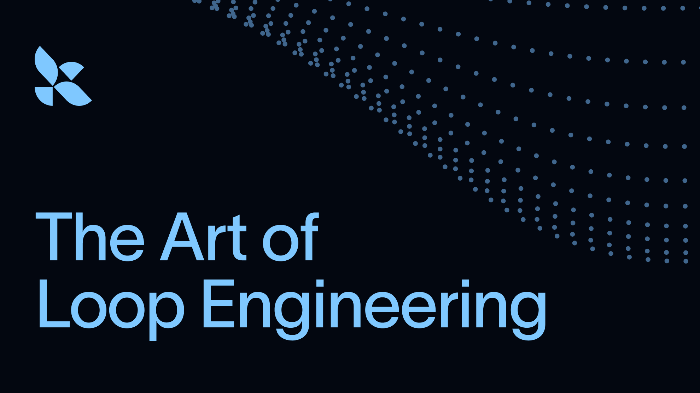
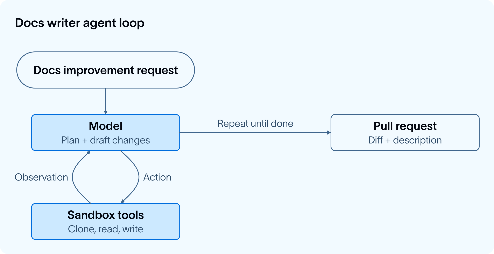
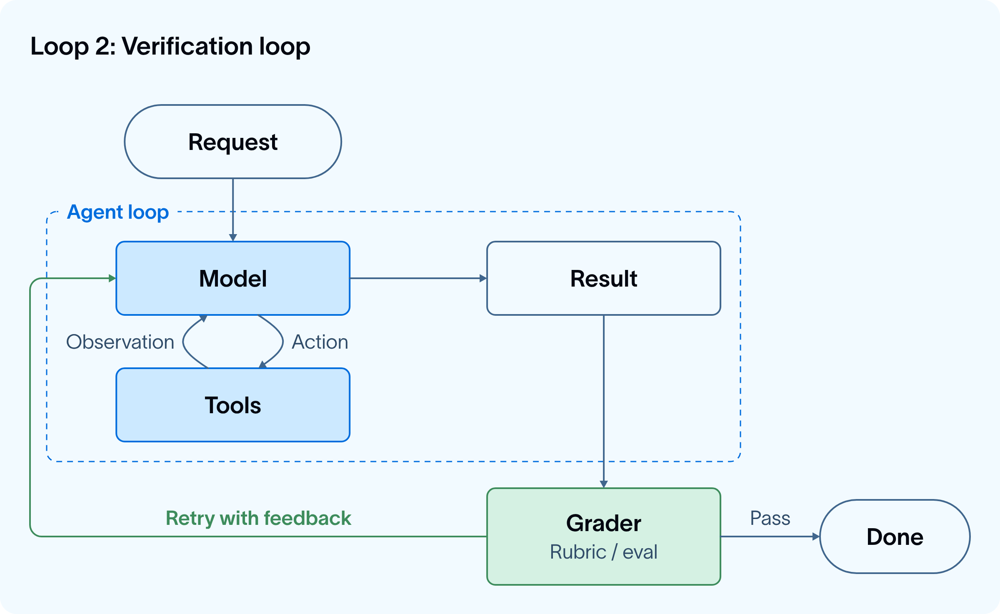
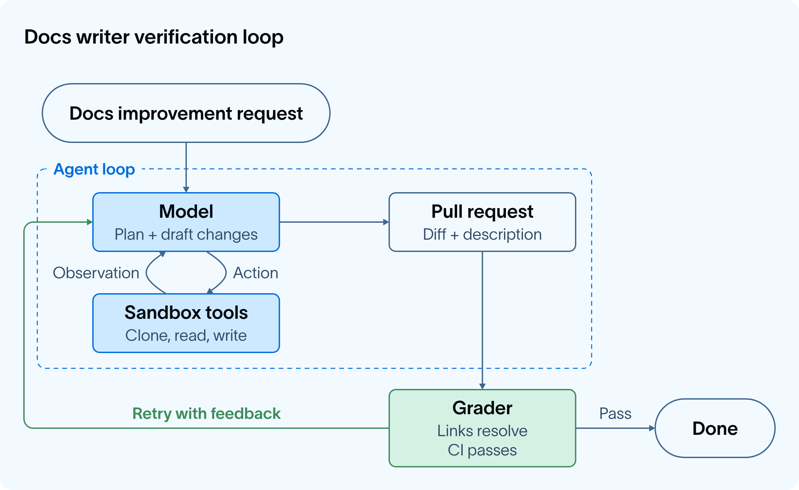
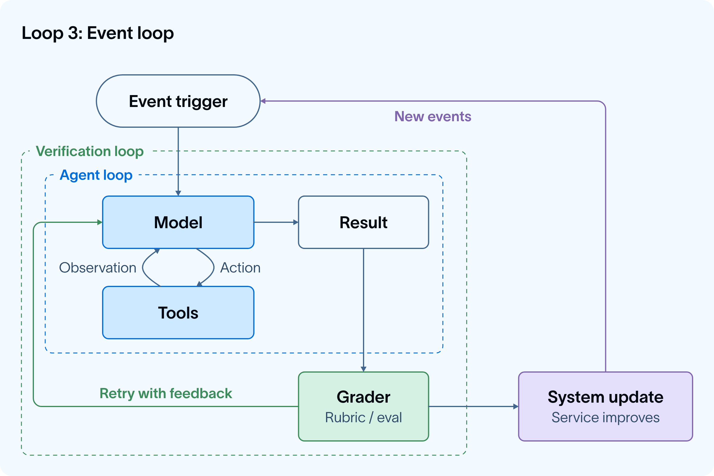
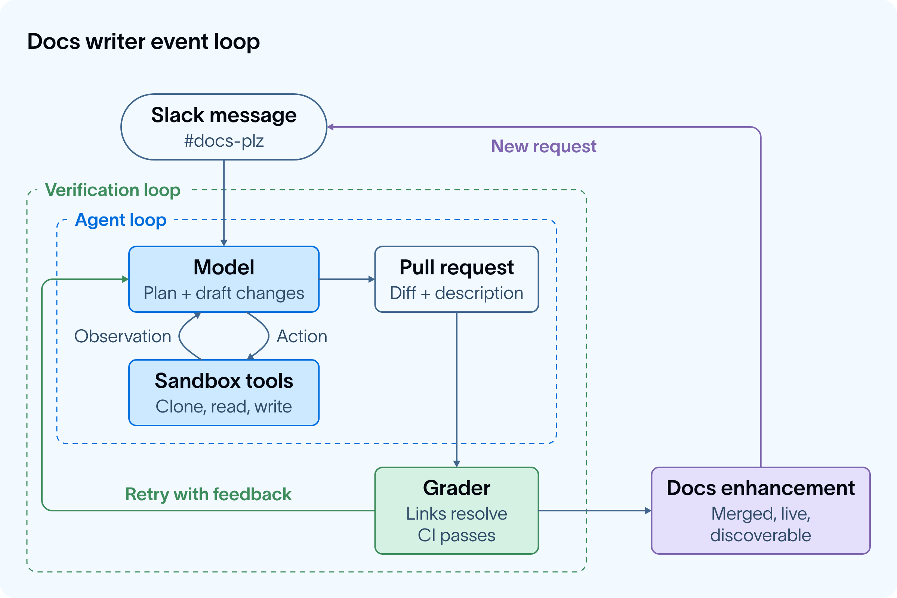
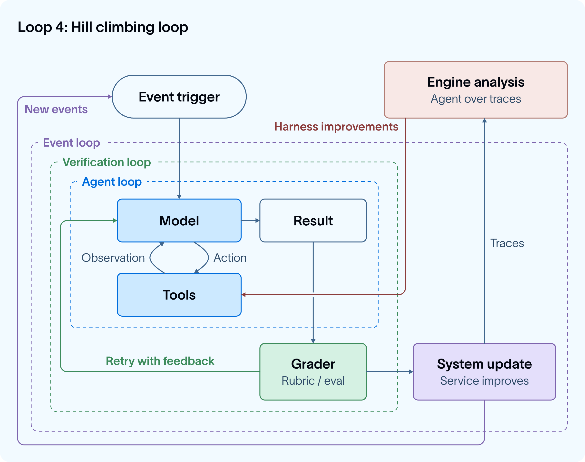
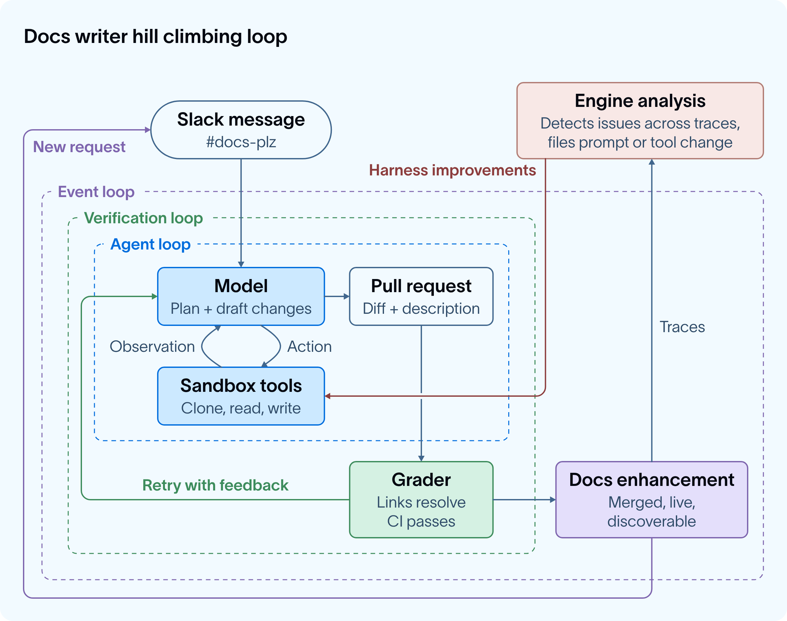

LangChain · Blog · 2026-06-16
The Art of Loop Engineering循环工程的艺术：四层循环，让智能体越跑越好

60 秒速览：这篇文章在说什么
译者所加，不是原文的一部分 —— 读完这 6 条，再看原文会快很多。
- 一句话结论：可靠的智能体不是「强模型 + 一组工具」，而是模型外面套着几层循环——干活、验证、被事件触发、用运行记录自我改进。
- 四层循环：第一层智能体循环（模型反复调工具直到完成）→ 第二层验证循环（评分器按量表打分，不合格带反馈重试）→ 第三层事件驱动循环（定时、webhook、消息触发，常驻系统）→ 第四层爬坡循环（运行记录喂给分析智能体，改写运行框架）。
- 关键区别：前三层自动化的是「工作」，第四层自动化的是「改进」；第四层的回箭头不只是绕回顶部，而是伸进内层、直接改智能体循环。
- 落地对应：文中给的都是 LangChain 原语：create_agent、RubricMiddleware 与 after_agent 钩子、LangSmith Deployment 与 Fleet channels、LangSmith Engine。
- 代价与边界：验证会增加延迟和成本，当质量比速度更重要时，增加验证通常是值得的；人的判断仍然要放在敏感动作、评分和上线前审查这些位置。
- 作者的判断：价值正在从第一、二层（把活干完）转向第三、四层（把智能体嵌进生态、持续变好）；早早建起学习循环的组织会拿到难以复制的优势。
常见搭法：只搭基础循环，外围靠人工
- 一个智能体 + 一组工具，跑完就交给人
- 错误靠人工 review 抓，失败后手动重来
- 智能体要人手动触发，跑在一次会话里
- 线上出问题靠人翻日志、改 prompt
本文建议：四层循环叠起来
- 第一层 智能体循环：把活干完
- 第二层 验证循环：评分器自动打分、带反馈重试
- 第三层 事件驱动循环：cron / webhook / 消息触发，常驻系统
- 第四层 爬坡循环：运行记录喂给分析智能体，改写运行框架，越跑越好
- 四层可嵌套：外层循环让内层循环更有效
左右两栏是译者按正文归纳，不是原文；原文自己的对照表在「把四层拼起来」一节。
读法建议：速览和对比卡是译者按正文压缩的，不是原文；正文里带虚线下划线的词可以悬停看术语卡，上标数字是译者注。原文 2026-06-16 发布在 LangChain Blog，作者 Sydney Runkle。
Agents are useful because they help us automate work by taking actions in the real world. But getting agents to do valuable work reliably takes more than just a good model: it requires a carefully designed harness that's fit to a set of tasks.
智能体之所以有用，是因为它能在真实世界里替我们采取行动、把工作自动化。但要让智能体稳定地把活干出价值，光有好模型远远不够：它需要一个为具体任务量身设计的运行框架（harness）1。
The core agent algorithm is simple: give the LLM context and let it call tools in a loop until it's done. This is the most fundamental loop. But it’s far from the only loop that powers agents. Swyx recently wrote a great piece on "loopcraft: the art of stacking loops", the idea that you can stack and extend loops to build more effective agents.
智能体的核心算法很简单：把上下文交给 LLM，让它在一个循环里反复调用工具，直到完成。这是最基础的一层循环。但它远不是驱动智能体的唯一一层循环。Swyx 最近写了一篇很好的文章 「loopcraft：堆叠循环的艺术」2，讲的正是可以叠加、扩展循环来构建更有效的智能体。
Here's how we think about that stack, and how to instrument each level with LangChain primitives.
下面是我们如何看待这摞循环，以及如何用 LangChain 的原语（primitives）把每一层实现出来。
Loop 1: The Agent第一层：智能体循环
本层只回答「能不能做」：模型在循环里反复调工具直到完成。LangChain 的 create_agent 就是这一层；后文的文档智能体是贯穿全文的例子。
At its core, an agent is just a model calling tools in a loop until a task is complete.
从本质上说，智能体只是一个模型在循环里调用工具，直到任务完成。

第一层：智能体循环 请求进入模型，模型在 Action 与 Observation 之间反复调工具；「Repeat until done」把循环收敛成结果。
原文图注：Loop 1: Agent loop diagram
这张图怎么看（3 条）
- 看下面的小环：Model 与 Tools 之间有两条箭头，右出的是 Action（模型动手），左回的是 Observation（工具结果回到上下文）。
- 看上面的入口：Request 只有一条箭头进 Model，说明这一层只处理「一次请求怎么做完」。
- 看横向：循环不结束就不算完，直到模型不再调工具，箭头才指向 Result。
一句话：这一层只解决「能不能把活干完」。
This is what LangChain’s create_agent gives you. Pick any model, plug in tools, and you have a working agent loop. Tools are what give the agent the power to take action in the real world.
这正是 LangChain 的 create_agent 提供的东西。随便挑一个模型、接上一组工具，你就得到了一个能跑的智能体循环。工具 让智能体有能力在真实世界里采取行动。
Take our internal docs agent as an example (which we’ll use as a motivating example for the rest of this blog). At the first loop level, it receives a request for a documentation improvement, the model plans and draft changes, and it uses tools to clone repos, read files, write docs, open a pull request, etc.
拿我们内部的文档智能体举例（后面的内容都会以它为例子）。在第一层循环里，它收到一个改进文档的请求，模型规划并起草改动，然后调用工具去克隆仓库、读文件、写文档、开 Pull Request，等等。

文档智能体的第一层 同一个循环换上具体角色：文档改进请求进来，模型规划并起草改动，沙箱工具负责克隆、读、写，最后产出带 diff 与描述的 Pull Request。
原文图注：Docs writer agent loop diagram
这张图怎么看（3 条）
- 看 Tools 框：Sandbox tools 下面写着 Clone, read, write——这是文档智能体实际能碰的三类动作。
- 看右端：Result 被具体化成 Pull request，括号里是 Diff + description，也就是这次「做完」的交付物。
- 对比 fig1：拓扑完全一样，变的只是每个框里的名字。
一句话：换任务只换框里的名字，循环结构不变。
Level 2: Verification loop第二层：验证循环
本层回答「做得对不对」：在外面套一个评分器，按量表打分，不合格就带反馈重试。代价是延迟与成本上升。
The agent loop gets work done, but it doesn't always produce correct or consistent work on the first pass. When consistency matters, it's often useful to wrap it in a verification loop that checks the output and sends feedback back to the model when it falls short.
智能体循环能把活干完，但第一次就做对、做一致，并不总能保证。当一致性很重要时，通常值得在它外面再套一层验证循环：检查输出，不达标就把反馈送回模型。

第二层：验证循环 在智能体循环外面再套一层：Result 交给 Grader，按 Rubric / eval 打分；Pass 才进 Done，不合格就沿绿线 Retry with feedback 回到 Model。
原文图注：Loop 2: Verification loop diagram
这张图怎么看（3 条）
- 看蓝色虚线框：Agent loop 被整体包住，说明验证在「外层」，不是塞进循环内部。
- 看绿色 Grader：它是唯一的判断点，输入是 Result，输出只有 Pass 或 Retry。
- 看绿色回线：反馈直接回到 Model，而不是回到 Tools——改的是下一次怎么想，不是上一个动作。
一句话：验证循环把「交付」变成「打分—重试」。
The verification loop adds a grader: something that checks the agent's output against a rubric and, if it fails, sends the result back with feedback. Graders can either be deterministic or agentic (LLM as a judge is a classic example, here).
验证循环增加了一个评分器（grader）：它拿评分量表（rubric）3 去检查智能体的输出，不合格就把结果连同反馈一起退回。评分器既可以按固定规则检查（deterministic），也可以交给智能体判断（agentic）——LLM 当裁判 就是后者的经典例子。
RubricMiddleware handles this pattern, or you can wire it up with an after_agent hook on create_agent.
RubricMiddleware 能处理这种模式，也可以在 create_agent 上挂一个 after_agent 钩子 自己接。
For our docs writer example, the grader runs tests after each attempt, checking that all links resolve, all CI checks pass, and the diff is scoped to what was actually requested. No manual review needed to catch those classes of error.
在文档智能体这个例子里，评分器在每次尝试后跑测试，检查所有链接都能解析、所有 CI 检查都通过、diff 的范围确实就是被要求改的那部分。这几类错误不需要人工 review 就能抓住。
One tradeoff: adding verification increases latency and cost per run. It's worth it when quality matters more than speed, which is most production use cases.
一个代价是：加验证会增加每次运行的延迟和成本。当质量比速度更重要时——大多数生产场景都是如此——这笔投入是值得的。

文档智能体的验证循环 文档智能体版：Grader 检查 Links resolve 与 CI passes，不合格就带着反馈重试，合格才 Done。
原文图注：Docs writer verification loop diagram
这张图怎么看（3 条）
- 看 Grader 里的两行：Links resolve、CI passes——这是文档任务最硬的验收条件。
- 看 Retry 回线：它回到 Model，而不是回到 Pull request，说明修的是生成过程。
- 看右端 Done：从 Grader 出去，不是从智能体出去——通过与否由评分器决定。
一句话：验收标准写进评分器，才能无人值守地重试。
Level 3: Event driven loop第三层：事件驱动循环
本层回答「什么时候跑」：cron、webhook、消息事件触发，智能体变成系统里常驻的组件，而不是被人手动调用。
One of the most important parts of agent development is the integrations layer: connecting your agent to your ecosystem so that it can run in the background.
智能体开发中最重要的部分之一是集成层：把智能体接进你的生态，让它能在后台跑起来。
The event-driven loop connects your agent to your ecosystem. An event fires — a new document lands, a schedule triggers, a webhook arrives — and the agent runs. The agent isn't something you invoke manually; it's a component running continuously inside a larger system.
事件驱动循环负责把智能体接入你的生态。事件发生了——新文档落地、定时任务触发、webhook 到达4——智能体就运行一次。它不再是你手动调用的东西，而是长期跑在一个更大系统里的组件。

第三层：事件驱动循环 事件触发之后，跑的仍是一个完整的验证循环；结果落到 System update（Service improves），再以 New events 回到触发器。
原文图注：Loop 3: Event loop diagram
这张图怎么看（3 条）
- 看紫色外圈：Event trigger → … → System update → New events → Event trigger，这是常驻系统的那一层。
- 看虚线嵌套：Agent loop 与 Verification loop 都缩在事件循环里面，说明事件层不重写工作逻辑，只负责「什么时候跑」。
- 看紫色终点框：System update 写着 Service improves——这一层的产出是系统状态变化，不是一份文档。
一句话：事件循环把智能体变成系统里常驻的组件。
LangSmith Deployment supports the trigger infrastructure, including support for cron schedules and webhooks. One popular example of crons in action is “heartbeats” in openclaw, which turn your agent into an always-on, proactive assistant.
LangSmith Deployment 支撑触发器基础设施，包括 cron 定时任务 与 webhook。定时任务在实践中一个流行的例子，是 openclaw 里的「心跳」（heartbeat）5：它把智能体变成一个始终在线、主动干活的助手。

文档智能体的事件循环 Slack 的 #docs-plz 消息就是 Event trigger；跑完验证循环后落到 Docs enhancement（Merged, live, discoverable），新请求再回到起点。
原文图注：Docs writer event loop diagram
这张图怎么看（3 条）
- 看顶部：Slack message 下面标了 #docs-plz——触发源具体到一个频道。
- 看右下：Docs enhancement 下面三个词 Merged, live, discoverable，是「真的上线了」的三个条件。
- 看最外圈：New request 绕回 Slack message，说明这是一个持续在线的服务，不是一次性任务。
一句话：触发器接进日常工具，智能体才会被真正用起来。
Level 4: Hill climbing loop第四层：爬坡循环
本层回答「怎么越跑越好」：运行记录喂给分析智能体，产出的改动直接写回运行框架；这是唯一自动化「改进」的循环。
The first three loops automate work. The fourth (and arguably most important) automates improvement!
前三层循环自动化的是「工作」。第四层（也可以说最重要的一层）自动化的是「改进」！

第四层：爬坡循环 Engine analysis 从 Traces 里找出问题，沿红色 Harness improvements 箭头把改动写回内层；紫色 New events 是事件循环自己的回线，两条线作用不同。
原文图注：Loop 4: Hill climbing loop diagram
这张图怎么看（3 条）
- 看右侧红色块：Engine analysis 的输入是 Traces，输出是 Harness improvements——这是「分析 → 改配置」的闭环。
- 看红色箭头：它从右侧直接指向内层的 Tools，不是绕回顶部；紫色 New events 才是回到 Event trigger 的那条线。
- 看三层虚线嵌套：Agent ⊂ Verification ⊂ Event，最外面才是这层爬坡；越外层，改动越「元」。
一句话：四层里唯一自动化「改进」的一层，也是复利所在。
Every agent run produce a trace: a record of what the model did, the tools it called, grader feedback, etc. Those traces contain high value signal regarding what's working and what isn't. The hill climbing loop runs an analysis agent over those traces and uses the findings to rewrite the harness with improved configuration. That can include prompt/tool tweaks or grader tweaks.
智能体的每一次运行都会 产生一条运行记录6：记录模型做了什么、调用了哪些工具、评分器的反馈，等等。这些运行记录里带着很有价值的信号：什么在起作用，什么没有。爬坡循环（hill climbing loop）会用一个分析智能体扫这些运行记录，并用结论重写运行框架的配置。这可以包括调 prompt、调工具，或者调评分器。
In LangSmith, you can use Engine, our trace analysis agent, to instrument this fourth loop.
在 LangSmith 里，你可以用 Engine——我们的运行记录分析智能体——来把第四层循环实现出来。
Wrapping up the docs agent analogy, we run engine over the docs agent traces to detect any issues. When multiple traces signal a potential problem, an issue is filed requesting changes to the offending prompt or tool.
最后用文档智能体收个尾：我们让 Engine 跑在它的运行记录上，找出问题。当多条运行记录都指向潜在问题时，就会开一个 issue，要求修改有问题的 prompt 或工具。

文档智能体的爬坡循环 Engine analysis 跨 trace 发现问题、提交修改 prompt 或工具的请求；请求落实后，下一轮运行就能用上新配置。
原文图注：Docs writer hill climbing loop diagram
这张图怎么看（3 条）
- 看 Engine analysis 的两行：Detects issues across traces, files prompt or tool change——先发现问题，再落成改动请求。
- 看红色 Harness improvements：它指向 Sandbox tools，说明改的是工具与配置层，不是模型权重。
- 看两条回线：紫色 New request 回到 Slack message 触发下一轮；红色箭头只负责把改进送进内层，二者不要混。
一句话：改进以「请求」的形式落地，不是静默改掉。
The key move here is that the return arrow doesn't just loop back to the top — it reaches inside and updates the agent loop directly. Each cycle of the outer loop makes the inner loops more effective.
这里的关键动作是：那条回箭头不只是绕回顶部，而是伸进内层，直接更新智能体循环。外层循环每转一圈，内层循环就变得更有效一点。
Looking forward: prompt and tool configuration are the most simple things to improve, but they're not the only options. For teams running open-weight models, the hill climbing loop can feed into RL fine-tuning, using trace or eval outcomes as training signal to improve the model itself. Auxiliary context like memory and retrieved skills can be improved the same way. The loop is the pattern; what it optimizes is up to you.
展望： prompt 和工具配置是最简单的改进点，但它们不是唯一的选项。对使用开放权重模型（open-weight）的团队来说，爬坡循环可以把运行记录或评测（eval）的结果当作训练信号，喂给强化学习微调（fine-tuning），直接改进模型本身。记忆、检索到的技能这类辅助上下文，也可以用同样的方式改进。循环是模式；它优化什么，由你决定。
Human oversight and expertise人的监督与专业判断
每一层都有人工介入的天然位置：敏感动作前、评分时、上线前。自动评分器查得了链接，查不了「这段内容该怎么讲」。
Automation doesn't mean removing humans from the loop. At every level, there are natural points where human oversight adds value. An automated grader can check whether links resolve; it takes a human to notice the framing is wrong for the audience. That kind of judgment, earned from context, experience, and taste, is exactly where human review earns its place.
自动化不意味着把人从循环里拿掉。在每一层，都有一些天然的位置，人的监督能带来价值。自动评分器能检查链接是否可解析；但要发现「内容的切入角度不适合目标读者」，得靠人。这种来自上下文、经验和品味的判断，正是人工 review 值得存在的地方。
Some expertise should be codified in the prompt/tools themselves, but for sensitive actions, live human review is essential (think financial transactions, DB operations, etc). LangChain makes it straightforward to instrument these touch points in every loop:
有些专业判断应该固化进 prompt 和工具本身，但对敏感动作，实时的人工 review 不可替代（想想金融交易、数据库操作）。LangChain 让每一层循环里的这些触点都很容易接上人：
- In the agent loop, require human input before sensitive actions/tool calls
- In the verification loop, a human can act as the grader for sensitive workflows
- In the application loop, a human can approve outputs before they’re returned to the end user
- In the hill climbing loop, harness improvements can flow through human review before deployment
- 在智能体循环里，敏感动作或工具调用之前 要求人工输入
- 在验证循环里，敏感流程可以让人来当评分器
- 在应用循环里，输出返回给最终用户之前，人可以审批
- 在爬坡循环里，运行框架的改进可以先过人工 review 再上线
All of LangChain’s open source frameworks make adding a “human in the loop” a first class primitive.
LangChain 所有开源框架都把「人在回路」（human in the loop）做成了 一等公民。
Putting it all together把四层拼起来
一张表把四层循环、各自的作用、影响和对应的 LangChain 原语对齐；作者认为价值正在向第三、四层转移。
In case you’d prefer a more tabular view, here’s how those four loops stack together:
如果你更喜欢表格，四层循环叠起来是这样：
| Loop循环 | What it does它做什么 | Impact影响 | LangChain primitiveLangChain 原语 |
|---|---|---|---|
| 1. Agent loop1. 智能体循环 | Model calls tools repeatedly until a task is complete模型反复调用工具，直到任务完成 | Automate work自动化工作 | create_agent, any LangChain-supported modelcreate_agent，以及任何 LangChain 支持的模型 |
| 2. Verification loop2. 验证循环 | Agent runs, output is scored against a rubric, retried with feedback if it fails智能体运行，输出按评分量表打分，不合格就带反馈重试 | Ensure work quality and correctness保证工作质量与正确性 | RubricMiddlewareRubricMiddleware |
| 3. Event driven loop3. 事件驱动循环 | Events trigger agent runs that update a real system事件触发智能体运行，更新真实系统 | Automated work at scale规模化自动工作 | LangSmith Deployment with cron triggers / webhooks or Fleet channelsLangSmith Deployment 的 cron 触发器 / webhook，或 Fleet channels |
| 4. Hill climbing loop4. 爬坡循环 | Traces from production runs feed an analysis agent that improves the harness config生产运行的运行记录喂给分析智能体，改进运行框架配置 | Harness improvements运行框架持续改进 | LangSmith EngineLangSmith Engine |
We’ve been thinking about loops 1 and 2 for a while. But focus should pivot to loops 3 and 4 where value compounds by embedding agents into your ecosystem that continuously improve in response to your criteria.
我们已经琢磨第一、第二层有一阵子了。但重心应该转向第三、第四层：把智能体嵌进你的生态、让它按你的标准持续变好，价值会在那里复利。
Satya frames the organizational stakes: companies that build learning loops early,where human judgment and token capital compound together, will build an advantage that's hard to replicate.
Satya 把组织层面的利害关系讲清楚7：早早建起学习循环的公司，会让人的判断与 token 资本一起复利，从而形成难以复制的优势。
Acknowledgements致谢
Reference参考资料
补充材料
下面几块都是译者所加，用来补上原文没展开的部分。正文里的虚线链接、虚线术语、上标数字，都能悬停看卡片；这里给出完整的清单，方便你事后再回头查。
延伸阅读地图
原文 16 处正文引用，指向 15 个不同链接；另有 8 张配图未计入。按「不读会不会误解本文」分成三档：必读 / 背景 / 可选，建议顺序即卡片上标注的数字。每条都写了「不点开也能拿到的重点」，所以你可以完全不跳转地读完这篇文章。
Loopcraft：堆叠循环的艺术
latent.space · Loopcraft: The Art of Stacking Loops
正文对应：「loopcraft：堆叠循环的艺术」 loopcraft
这是什么：swyx 在 Latent Space 的文章：把「循环」当作设计对象，一层层叠起来搭智能体。
为什么值得点：本文的整个框架来自这篇；正文只借了标题，读原文能拿到「为什么可以叠、怎么叠」的论证。
访问说明：原文里给的 /p/ainews-loopcraft-the-art-of-stacking 已 404，卡片改用作者现在的页面 /p/loopcraft/。
不点开也能拿到的重点
文章把智能体系统看成一摞可嵌套的循环：内层负责行动，外层负责验证、触发和改进。关键不是某一层多强，而是层与层如何咬合、外层如何改写内层。
- loopcraft = 把 loop 当设计对象
- 循环可以叠加而不是替换
- 外层循环能改写内层配置
Agents：create_agent 文档
docs.langchain.com · Agents — Docs by LangChain
正文对应：create_agent
这是什么：LangChain 里创建智能体的入口：给模型、给工具，得到一个能跑的循环。
为什么值得点：正文第一层循环的落地实现就是它；文档还讲了 prompt、工具、中间件怎么共同构成运行框架。
不点开也能拿到的重点
官方把智能体定义为「模型在循环里调用工具直到任务完成」，并强调运行框架（prompt、工具、middleware）决定行为边界。
- 最小智能体 = 模型 + 工具 + 循环
- 运行框架决定行为
- 与后续中间件、钩子衔接
评分量表（RubricMiddleware）
docs.langchain.com · Grading rubrics — Docs by LangChain
正文对应：RubricMiddleware
这是什么：按评分量表反复迭代、直到达标的中间件。
为什么值得点：第二层验证循环的现成实现；正文把它和 after_agent 钩子并列为两种接法。
不点开也能拿到的重点
把「好」写成 rubric，让评分器逐轮打分；不达标就把反馈送回模型重试，直到通过或耗尽预算。
- rubric = 可检查的标准
- 不达标自动带反馈重试
LangSmith 观测与 trace
docs.langchain.com · LangSmith Observability
正文对应：产生一条运行记录
这是什么：记录并查看智能体每一次运行：模型调用、工具调用、评分反馈。
为什么值得点：第四层爬坡循环的原料就是 trace；没有它，改进没有依据。
不点开也能拿到的重点
trace 是一次运行的完整链路；LangSmith 支持筛选、对比与监控，让「哪一步在拖后腿」变得可查。
- trace = 一次运行的全链路
- 可筛选、可监控
LangSmith Engine：trace 分析智能体
langchain.com · LangSmith Engine
正文对应：Engine
这是什么：跨 trace 找问题的分析智能体，是第四层循环里的「分析者」。
为什么值得点：正文用它落地爬坡循环：发现问题、提交 prompt 或工具改动。
不点开也能拿到的重点
Engine 会归纳失败模式、写 prompt 或代码修复、验证不引入回归；接了代码库还可以直接开 GitHub PR 供团队 review 合并。本文的文档智能体例子只写到「提交 issue 请求改动」，比当前产品能力保守。
- 写 prompt / 代码修复并自测
- 可开 GitHub PR
- 本文例子只提「请求改动」
Tools：工具文档
docs.langchain.com · Tools — Docs by LangChain
正文对应：工具
这是什么：给智能体定义可调用工具的方式：取实时数据、执行代码、查数据库、对外部系统动手。
为什么值得点：第一层循环里，模型之所以能「采取行动」，靠的就是工具；这一段正文只一句话带过。
不点开也能拿到的重点
工具是模型与外部世界之间的动作接口；文档讲工具的描述、参数 schema、调用与错误处理。
- 工具 = 动作接口
- schema 影响调用准确率
如何定义 LLM 裁判
docs.langchain.com · How to define an LLM-as-a-judge evaluator
正文对应：LLM 当裁判
这是什么：用一个大模型按给定标准给另一个模型的输出打分。
为什么值得点：正文说评分器可以「确定性」也可以「智能体式」，LLM 裁判就是后者最典型的例子。
不点开也能拿到的重点
LLM 裁判适合「没有唯一正确答案、但有明确标准」的任务；文档给评分标准、样例与偏差控制的写法。
- 适合主观但有标准的任务
- 标准要写成可逐条检查的 rubric
使用 cron 定时任务
docs.langchain.com · Use cron jobs — Docs by LangChain
正文对应：cron 定时任务
这是什么：LangSmith 里按时间表触发智能体运行。
为什么值得点：第三层事件驱动循环最常见的触发方式之一。
不点开也能拿到的重点
用 cron 表达式给部署好的智能体排期；文档讲时区、调度与运行记录。
- 时间触发
- 部署后才有意义
使用 webhook
docs.langchain.com · Use webhooks — Docs by LangChain
正文对应：webhook
这是什么：LangSmith 的出站 webhook：某次运行完成后，向外部服务发 POST 回调。
为什么值得点：正文说的是「webhook 到达」触发智能体（入站）；这篇文档讲的是反方向（出站通知），读的时候别混。
访问说明：文档标题 Use webhooks，正文明确是 outbound webhook requests。
不点开也能拿到的重点
文档介绍运行完成后的出站 POST：指定回调地址、配置鉴权头、管理重试。另有 automation webhooks，同样由 LangSmith 向外部端点发 POST，只是触发条件改成规则匹配运行或会话——两者都不是「外部事件打进 LangSmith」。
- 方向：LangSmith → 外部服务
- 触发点：某次运行完成
- 与正文的入站事件方向相反
Fleet：无代码智能体搭建器
langchain.com · Fleet — LangSmith
正文对应：Fleet
这是什么：LangChain 的无代码智能体搭建器，文档智能体就托管在它上面。
为什么值得点：正文用它做「事件触发」的落地例子：channels 与 schedules。
不点开也能拿到的重点
Fleet 面向不写代码的团队：用 channel 接消息、用 schedule 定时，底层仍是同一套循环与运行记录。
- channels 接事件
- schedules 做定时
人在回路：人工输入
docs.langchain.com · Human-in-the-loop — Docs by LangChain
正文对应：要求人工输入
这是什么：在敏感动作或工具调用前停下来，等人工输入。
为什么值得点：正文「人的监督」一节的第一条落地方式。
不点开也能拿到的重点
人审不是把整条流程停下来，而是在关键节点插入审批；文档讲中断、恢复与状态保存。
- 敏感动作前中断
- 恢复后继续执行
Deep Agents：人在回路
docs.langchain.com · Human-in-the-loop — Deep Agents
正文对应：一等公民
这是什么：Deep Agents 把人工审批做成框架里的一等能力。
为什么值得点：正文说 LangChain 的开源框架都把它做成一等公民，这里是 Deep Agents 的版本。
不点开也能拿到的重点
为敏感工具配置审批门：调用前暂停、等人决定、再继续；适合金融、数据库这类不可逆操作。
- 审批门是框架能力
- 面向不可逆操作
Satya Nadella：没有生态的前沿并不稳定
x.com · A frontier without an ecosystem is not stable
正文对应：把组织层面的利害关系讲清楚
这是什么：Satya 的 X 长文，谈 AI 经济里公司的未来：人与数字系统之间第一次出现真正的认知循环。
为什么值得点：正文结尾借它把「学习循环」从工程问题抬到组织问题。
访问说明：X 需要登录；本机直连超时，内容经 fxtwitter 接口确认存在（2026-06-14 发布）。
不点开也能拿到的重点
长文的核心：竞争不再只是买工具，而是组织能不能持续学习、积累 IP、把人判断与模型能力接成回路；早建循环的公司会得到复利。
- 认知循环发生在组织层
- 学习速度决定优势
- 人判断与 token 资本一起复利
openclaw 的 heartbeat（已迁移）
docs.openclaw.ai · Heartbeat migration — OpenClaw
正文对应：openclaw
这是什么：原文引用的「heartbeat」用法：定时唤醒智能体，让它变成常在线、主动干活的助手。
为什么值得点：正文把它当作 cron 在实践中的流行例子；但这条链接的内容已经变了。
访问说明：页面标题已是 Heartbeat migration；heartbeat 监控被 automation jobs 取代。
不点开也能拿到的重点
注意：这个页面现在是迁移指南——heartbeat 监控已经退休，改成普通的 automation jobs，由 job 自己带 schedule、prompt、scratch 与运行历史。原文说的「heartbeat 让 agent 常在线」是当时的用法。
- heartbeat 已退休
- 改为 automation jobs
- 引用要按当时的语境理解
课程：用 LangChain Deep Agents 做循环工程
deeplearning.ai · Loop Engineering with LangChain Deep Agents
正文对应：《Loop Engineering with LangChain Deep Agents》
这是什么：DeepLearning.AI 的短课，作者是 LangChain 团队。
为什么值得点：想把这套四层循环上手做一遍的人，可以从这里开始。
不点开也能拿到的重点
课程围绕 agent loop 与外围循环展开：先让模型会行动，再给它验证、触发和改进的框架。
- 官方团队授课
- 从 agent loop 讲到外围循环
术语表
正文里带虚线底线的词，悬停即出解释；这里是完整 15 条，可当速查用。
最基础的一层：模型在循环里反复调用工具，直到任务完成。
对着工具箱反复试，直到把活干完。
在智能体循环外面再套一层：评分器按量表检查输出，不合格就带反馈退回重试。
交卷前先按评分标准自己批一遍。
由外部事件（定时、webhook、消息）触发智能体运行，让它常驻系统而不是被人手动调用。
门铃响了才去开门，而不是一直站在门口。
用生产运行记录驱动的改进循环：分析智能体找出问题，直接改写运行框架的配置。
每次只往上走一小步，走对了就保留。
围绕模型的整套运行配置：prompt、工具、评分器、循环结构。
不是发动机本身，而是把发动机装进车里跑起来的底盘。
按评分量表给智能体输出打分的组件，可以是确定性测试，也可以是 LLM 裁判。
阅卷老师，按评分细则给分。
把「什么叫做好」拆成可以逐条检查的标准，供评分器使用。
作文的评分细则。
一次智能体运行的完整记录：模型做了什么、调了哪些工具、评分器给了什么反馈。
行车记录仪。
在关键步骤让人审批或判断，而不是全自动跑完。
自动驾驶里随时准备接管。
按固定时间表触发任务的机制。
闹钟。
外部系统发生事件时，主动回调你的服务。
快递到了给你发一条通知。
用任务数据继续训练模型，让它更适配特定任务。
科班毕业后再做上岗培训。
权重可以下载、自行部署和训练的模型。
买回家自己改的车。
用一组任务和标准衡量智能体的表现。
模拟考。
框架提供的最小可组合构件。
乐高积木。
译者注
正文中上标数字对应这里，解释的是「直译会看不懂」或「原文本身含糊」的地方。
这里的「运行框架」指什么
本文的 harness 指围绕模型的整套运行配置：prompt、工具、评分器、循环结构；不是评测集，也不是训练框架。
loopcraft 的原帖
swyx 原文发在 Latent Space；文章里给的链接（/p/ainews-loopcraft-the-art-of-stacking）已经 404，本页链接卡改指可用的 /p/loopcraft/。
rubric 与 grader 的分工
rubric 是「什么叫做好」的评分标准；grader 是执行打分的组件，可以是确定性测试，也可以是 LLM 裁判。
webhook 的方向和正文相反
正文说「webhook 到达」触发智能体（入站）；LangChain 的 webhook 文档讲的是运行完成后向外部服务发 POST（出站）。两者方向相反，链接卡里写清楚了。
heartbeat 这条链接已经变了
原文把 openclaw 的 heartbeat 当作定时任务的流行用法；该文档现在已是迁移指南：heartbeat 监控被退休，改成普通 automation jobs。引用时按「当时的用法」理解。
trace 与 Engine
trace 是一次运行的完整记录（模型做了什么、调了哪些工具、评分器反馈）；Engine 是 LangSmith 里跨 trace 找问题的分析智能体。
Satya 那段是转述
结尾关于 Satya 的那句话是文章作者的转述，不是逐字引语。按 Satya 原文，token capital 指公司自己构建并拥有的 AI 能力，与 human capital（人的知识、判断与关系）并列；它不是单纯烧掉的算力预算。
原文笔误与图文问题
原文有 2 处笔误或图文问题，中文按语义翻译、英文照录原文，并在此备案，方便对照核查。不在正文里改动原文。
plans and draft changes原文语法如此（应为 drafts），中文按「规划并起草」翻译。
early,where human judgment原文逗号后缺空格，英文照录。